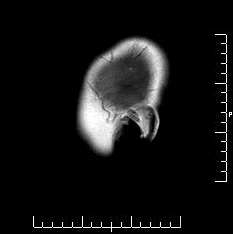

About Me
Hello World! I am an undergraduate computer science student at the University of Washington. I am interested in Machine Learning and Computer Vision and passionate about solving real problems with them. My work explores the intersection of deep neural networks and health.
Feel free to look through my projects below or by clicking the 'Projects' button on the top right.
